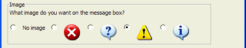
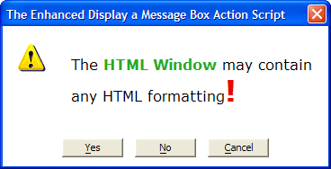

Display a Message Box
Overview
The Display a Message Box action automates the process of creating message boxes. Message boxes are a great way to communicate with users, allowing them to accomplish tasks using a simple, specialized interface for the task at hand.
Procedure
On the first page of the Script Genie select the buttons to include in the message box.
In the Initial Focus field optionally select a different button to have initial focus (becomes the default selection).
Click Next >.
On the second page of the Script Genie optionally select an image to display on the dialog box.

Enter a Title for the dialog box.
If you are using Alpha Five version 6 or higher, you may check Use HTML in message text.
If you did not check Use HTML in message text, enter a message to appear in the Message box. It is possible to use static text or an expression that resolves to a character string. To use the Expression Builder press the
 button.
button.If you did check Use HTML in message text.
Click Specify HTML Message to display the Edit Message Box Text dialog.
Enter your message and click Save.
Optionally, change the Message width and unit of measurement, which may be: "inches", "cm", or "characters".
Optionally, change the Message height and unit of measurement, which may be: "inches", "cm", or "characters".
Optionally, select the Dialog background color.
Optionally, clear Use Win3D background color. The background of the HTML component of the message will be set by the HTML code.
Optionally, check Indented to place an indent around the HTML component of the message.

Optionally, click Preview to display your message box.
Click Next >.
Enter a name for the dialog box in the Dialog Name field. The name should be unique so that when referenced, Alpha Five won't confuse it with any other objects.
Select each button in the If the user selects the list and make a selection in the then... field to specify what happens when you press the button. You can attach a previously defined script, or have it do nothing.
"Play a Script". Use this option to attach a script to a button. When you select this option, you'll be prompted to select the script you wish to attach. A drop-down box appears, listing available scripts. Pressing the button runs the script.
"Do Nothing - just set a Flag Variable to .T.". Use this option if you do not want the button to play a script. When the button is selected, the message box will close, and set a Flag Variable.
In both cases, Alpha Five automatically creates and names Flag Variables. In this case: "Error_Handler_YES_button", "Error_Handler_NO_button", and "Error_Handler_CANCEL_button".
Finally, Alpha Five asks you set the scope of the variables created on this dialog. A variable's scope refers to where the variable can be "seen". The following options are available:
Shared: Variables are available throughout the current form.
Global: Variables are available anywhere in Alpha Five.
Local: Variables are available only in the current script.
Click Next >.
Optionally modify the comment that describes the action.
Click Finish.
See Also